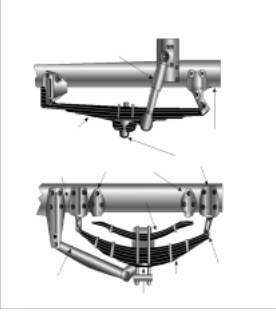
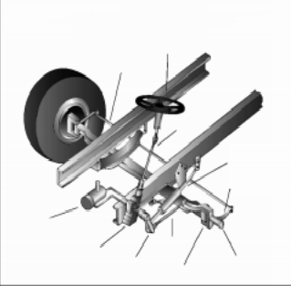
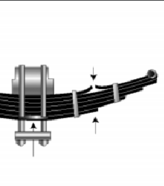
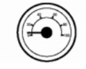
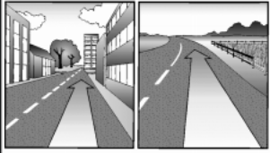
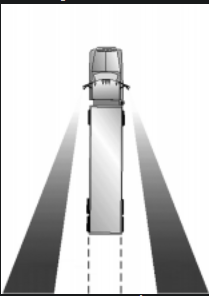
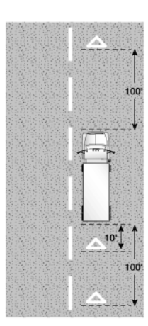
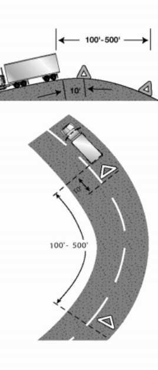
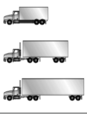

MODULO 1
CONDUCIR CON SEGURIDAD
Esta sección cubre
2.1 – Inspección del vehículo
2.1.1 – Por qué inspeccionar
La seguridad es el motivo más importante para que inspeccione su vehículo: su seguridad y la de otras personas en la carretera.
Un defecto en el vehículo que se encuentra durante una inspección puede evitarle problemas más adelante. Puede sufrir una avería en la carretera que le puede costar tiempo, dinero, o lo que es peor, un choque.
Las leyes federales y estatales requieren que los conductores inspeccionen sus vehículos. Inspectores
Federales y estatales también pueden inspeccionar su vehículo. Si consideran que su vehículo no es seguro, lo pondrán fuera de servicio hasta que sea reparado.
2.1.2 – Tipos de inspección de vehículo
Una inspección del vehículo lo ayudará a encontrar problemas que podrían provocar un choque o una avería. Cada prueba de inspección antes del viaje es una prueba con límite de tiempo. El tiempo máximo permitido para completar la prueba es de treinta minutos.
2.1.3 – Qué se debe buscar
Problemas en los neumáticos.
•Mucha o poca presión de aire.
Tambores de freno o zapatas en mal estado
PARTES IMPORTANTES DE LA SUSPENSIÓN Amortiguadores hidráulicos
•Tambores con rajaduras.
Estructura Placas de asiento Soporte del eje delantero
Ballesta auxiliar
SISTEMA DE DIRECCIÓN
•Barras de suspensión con rajaduras o rotas. •Hojas faltantes o rotas en cualquier ballesta de suspensión. Si falta un cuarto o más, el vehículo debe quedar “fuera de servicio”, pero cualquier defecto puede ser peligroso. DEFECTO DE SEGURIDAD:
Defectos en el sistema de suspensión. El sistema de suspensión sostiene al vehículo y su carga. Mantiene los ejes en su lugar. Por eso, las partes rotas de la suspensión pueden ser muy peligrosas. Busque: PARTES DEL SISTEMA DE LA SUSPENSIÓN NEUMÁTICA
2.1.4 – Prueba de inspección de vehículo de la licencia de conducir comercial
Para obtener la licencia de conducir comercial se le pedirá que pase una Prueba de licencia Comercial categoría D, Dicha prueba serán los tres estacionamientos frente, reversa y lateral la variante en esta prueba es la dimensión del vehicula ya, que, su dimensión es más ancha y larga.
del vehículo de la misma manera cada vez para aprender todos los pasos y tener menos posibilidades de olvidarse de algo. Guía de inspección del vehículo
Paso 1: Revise el estado general del vehículo Revise el último informe de inspección del vehículo. Es posible que los conductores deban realizar un informe diario por escrito de inspección del vehículo.
PRESIÓN DE ACEITE EN EL MOTO
Sección 2
2.1.6 – Inspección durante el viaje
Controle el funcionamiento del vehículo con regularidad
Usted debe controlar: 2.2 – Control básico de su vehículo
Para conducir un vehículo con seguridad usted deberá poder controlar la velocidad y la dirección. Conducir un vehículo comercial con seguridad requiere habilidad para: 2.2.1 – Acelerar
No retroceda al arrancar. Podría chocar a alguien detrás de usted. Si tiene un vehículo de transmisión manual, presione levemente el embrague antes de sacar el pie derecho del freno. Ponga el freno de mano si es necesario para evitar que el vehículo retroceda. Saque el freno de mano solo cuando haya acelerado el motor lo suficiente como para evitar que el vehículo retroceda. En un camión con remolque equipado con una válvula de freno de mano en el remolque, el freno de mano se puede poner para evitar que el vehículo retroceda.
Acelere suavemente y en forma gradual para que el vehículo no tironee. Una aceleración brusca puede causar un daño mecánico. Cuando se arrastra un remolque, la aceleración brusca puede dañar el sistema de acoplamiento.
Acelere muy lentamente cuando la tracción es baja, como cuando llueve o nieva. Si utiliza demasiada potencia, las ruedas de tracción pueden patinar. Podría perder el control. Si las ruedas de tracción comienzan a patinar, saque el pie del acelerador.
2.2.2 – Guiar el volante
Sujete el volante firmemente con las dos manos. Sus manos deberían estar en lugares opuestos del volante. Si golpea un bordillo o un bache (hoyo), el volante podría soltarse de sus manos a no ser que esté sujetándolo firmemente.
2.2.3 – Frenar
Presione el pedal de freno gradualmente. La cantidad de presión en el freno que necesitará para detener el vehículo dependerá de la velocidad del vehículo y qué tan rápidamente necesite detenerse. Controle la presión en el freno para que el vehículo se detenga suavemente y de forma segura. Si tiene transmisión manual, presione el embriague cuando el motor está cerca de punto muerto.
2.2.4 – Retroceder en forma segura
Como no es posible ver todo lo que hay detrás de su vehículo, retroceder siempre es peligroso. Evite retroceder siempre que sea posible. Cuando estacione, trate de hacerlo de manera que pueda salir hacia delante. Cuando tenga que retroceder, estas son algunas reglas simples de seguridad: 2.3 – Cambio de marcha
Realizar correctamente los cambios de marcha es importante. Si no puede poner la marcha correcta cuando está manejando, tendrá menos control del vehículo.
2.3.1 – Transmisiones manuales
Procedimiento básico para subir de marcha. La mayoría de los vehículos pesados con transmisión manual requieren presionar dos veces el embrague para cambiar de marcha. Este es el método básico: 2.3.2 – Las transmisiones auxiliares y los ejes traseros con velocidades múltiples
Los ejes traseros y transmisiones auxiliares con velocidades múltiples son usados en muchos vehículos para proporcionar marchas adicionales. Generalmente se controlan a través de una perilla o interruptor en la palanca de la caja de cambios de la transmisión principal. Hay muchas formas diferentes de hacer los cambios. Aprenda cuál es la forma correcta de hacer el cambio de marcha en el vehículo que conducirá.
2.3.3 – Transmisiones automáticas
Algunos vehículos tienen transmisiones automáticas. Se puede seleccionar un intervalo bajo para mejorar el frenado con el motor cuando baja por una pendiente. Los intervalos inferiores evitan que la transmisión suba más allá de la marcha seleccionada (a menos que se excedan las rpm del regulador). Es muy importante usar este efecto de frenado cuando baja una pendiente.
2.3.4 – Retardadores
Algunos vehículos tienen “retardadores”. Los retardadores ayudan a disminuir la velocidad de un vehículo, reduciendo la necesidad del uso de los frenos. Reducen el desgaste de los frenos y proporcionan otra forma de disminuir la velocidad. Hay cuatro tipos básicos de retardadores (de escape, de motor, hidráulicos y eléctricos). Todos los retardadores pueden ser activados o desactivados por el conductor. En algunos vehículos se puede ajustar la potencia del retardador. Cuando se activan, los retardadores aplican su fuerza de frenado (solamente en las ruedas de tracción) cada vez que quita el pie del pedal del acelerador.
Como estos dispositivos pueden ser ruidosos, asegúrese de saber en qué lugares está permitido usarlos.
EN CARRETERA ♦ ¿Cuál es la señal con la mano más importante con la que usted y la persona que lo ayuda deben entenderse?
2.4 – Visibilidad
Para conducir con seguridad necesita saber qué está ocurriendo alrededor de su vehículo. No mirar con atención es una causa muy importante de accidentes.
2.4.1 – Mirar hacia adelante
Todos los conductores miran hacia adelante, pero muchos no miran suficientemente lejos.
Importancia de mirar suficientemente lejos. Debido a que detenerse o cambiar de carril puede requerir una gran distancia, saber qué está pasando con el tránsito a su alrededor es muy importante.
2.4.2 – Mire hacia los lados y hacia atrás Es importante que sepa qué está ocurriendo atrás y a los lados de su vehículo. Revise los espejos con regularidad. Mire más seguido en situaciones especiales.
2.5 – Comunicación
Los otros conductores no pueden saber lo que hará a menos que se los diga.
Comunicar lo que pretende hacer es importante para la seguridad.
Reglas generales para señales:
2.5.2 – Comunicar su presencia
Otros conductores podrían no darse cuenta de su presencia, aun cuando esté a plena vista. Para ayudar a prevenir accidentes hágales saber que usted está allí.
Al rebasar. Siempre que vaya a pasar a un vehículo, peatón o ciclista, asuma que no lo han visto. Podrían ponerse delante de él repentinamente. Cuando sea legal, haga sonar levemente la bocina, de noche haga destellar sus luces poniendo y sacando las luces largas. Sea lo suficientemente cuidadoso al conducir como para evitar un choque, inclusive si no lo ven o escuchan.
VISIÓN OBSTRUIDA
Si el campo visual está obstruido por una
Colina o curva, mueva el triángulo de más atrás alejándolo hacia atrás en la carretera para que sirva de advertencia.
2.6 – Controlar la velocidad
Manejar demasiado rápido es una de las causas principales de choques fatales. Debe adaptar su velocidad a las condiciones de la carretera. Eso incluye tracción, curvas, visibilidad, tráfico y colinas.
2.6.1 – Distancia necesaria para detenerse
Distancia de percepción + distancia de reacción + distancia de frenado = distancia total necesaria para detenerse
2.6.2 – Adaptar la velocidad a la superficie de la carretera
No es posible controlar la dirección o frenar un vehículo si no tiene tracción. La tracción es la fricción entre los neumáticos y la carretera. Hay algunas condiciones de la carretera que reducen la tracción y requieren una velocidad más baja.
2.6.3 – Velocidad y curvas
Los conductores deben adaptar su velocidad a las curvas en la carretera. Si toma una curva demasiado rápido, pueden ocurrir dos cosas. Los neumáticos pueden perder la tracción y continuar derecho hacia adelante, de manera que usted patina y se sale de la carretera. O los neumáticos pueden mantener la tracción y el vehículo vuelca. Algunas pruebas han demostrado que los camiones con un centro de gravedad alto pueden volcar al límite de velocidad indicado en las señales para una curva.
2.6.4 – Velocidad y distancia hacia adelante
Siempre debería poder detenerse en la distancia que usted ve hacia adelante. Con niebla, lluvia u otras condiciones, será necesario que reduzca la velocidad para poder detenerse en la distancia que puede ver. En la noche no puede ver tan lejos con las luces cortas como con las luces largas. Si debe usar luces cortas, disminuya la velocidad.
2.6.5 – Velocidad y flujo de tránsito Cuando conduzca en tránsito pesado, la velocidad más segura es la velocidad de los otros vehículos. Los vehículos que van en la misma dirección y a la misma velocidad tiene bajas probabilidades de chocar unos con otros. En muchos estados, los límites de velocidad son más bajos para los camiones y autobuses que para los automóviles. Pueden variar en hasta 15 mph. Tome precauciones adicionales cuando cambie de senda o rebase en estas carreteras. Conduzca a la velocidad del tránsito si puede hacerlo sin ir a una velocidad ilegal o insegura. Mantenga una distancia segura con el vehículo que va adelante.
2.6.6 – Velocidad en bajadas
La velocidad de su vehículo aumentará en las bajadas a causa de la gravedad. Su principal objetivo es elegir y mantener una velocidad que no sea excesiva para:
2.6.7 – Zonas de calzadas en construcción
El tránsito que circula a alta velocidad es la principal causa de lesiones y muertes en las zonas de calzadas en construcción. Al aproximarse y conducir por una zona en construcción, respete siempre los límites de velocidad establecidos. Observe el velocímetro y no permita que su velocidad aumente mientras conduce por trechos largos de la carretera en construcción. Disminuya su velocidad cuando haya condiciones adversas del clima o la carretera. Disminuya aún más la velocidad cuando un trabajador esté cerca de la calzada.
2.7 – Administración del espacio
alrededor de su vehículo. Cuando las cosas marchan mal, el espacio le da tiempo para pensar y actuar.
2.7.1 – Espacio adelante
De todo el espacio alrededor de su vehículo, el más importante de todos es el área adelante del vehículo (el espacio hacia el que está conduciendo).
FÓRMULA PARA VEHÍCULOS PESADOS
Para calcular la distancia con el vehículo que va adelante suyo en tiempo 2.7.2 – Espacio atrás No puede evitar que otros lo sigan muy de cerca. Pero puede hacer algunas cosas para hacerlo más seguro. Manténgase a la derecha. Los vehículos pesados son a menudo seguidos muy de cerca cuando no pueden mantener la velocidad del tránsito. Esto ocurre con frecuencia cuando sube una pendiente. Si una carga pesada lo hace ir despacio, manténgase en el carril derecho si es posible. Al subir una pendiente, no debe rebasar otro vehículo a no ser que lo pueda hacer rápidamente y con seguridad. 2.7.3 – Espacio a los lados Los vehículos comerciales suelen ser anchos y ocupan la mayor parte del carril. Los conductores seguros administran el poco espacio que tienen. Se puede hacer manteniendo el vehículo centrado en el carril y evitando conducir junto a otros. 2.7.4 – Espacio arriba Es peligroso golpear objetos encima de usted. Asegúrese de tener siempre espacio arriba. No asuma que las alturas indicadas en señales en puentes y cruces es correcta. Repavimentaciones o nieve compactada pueden haber reducido el espacio desde que se instalaron las señales. 2.7.5 – Espacio abajo Muchos conductores se olvidan del espacio debajo de sus vehículos. Ese espacio puede ser muy pequeño cuando un vehículo está muy cargado. Es un problema frecuente en caminos de tierra y terrenos sin pavimentar. No se arriesgue a quedar atascado. Los canales de drenaje que atraviesan las carreteras pueden hacer que los extremos de algunos vehículos toquen el suelo. Cruce esas depresiones con cuidado. 2.7.6 – Espacio para giros El espacio alrededor de un camión o autobús es importante en los giros. A causa de la amplitud de giro y por salirse de los carriles, los vehículos grandes pueden golpear otros vehículos u objetos durante un giro. 2.7.7 – Espacio necesario para cruzar o entrar al tráfico Sea consciente del tamaño y peso de su vehículo cuando cruza o entra al tráfico. Cosas importantes a recordar:
· Inspección del vehículo
· Control básico de su vehículo
· Cambio de marcha
· Visibilidad
· Comunicación
· Administración del espacio
· Control de su velocidad
· Prever riesgos
· Distraerse al conducir
· Conductores agresivos/violencia en la carretera
· Conducir en la noche y fatiga del conductor
· Conducir en la niebla
· Conducir en el invierno
· Conducir con mucho calor
· Cruces de vías de tren y carreteras
· Conducir en la montaña
· Emergencias al conducir
· Sistema antibloqueo de frenos
· Controlar y recuperarse al patinar
· Procedimientos en caso de accidente
· Incendios
· Alcohol, otras drogas y conducir
· Reglas para materiales peligrosos
Esta sección contiene conocimientos e información sobre cómo conducir con seguridad que todos los conductores comerciales deberían conocer. Usted debe pasar una prueba sobre esta información para obtener su licencia de conducir comercial. Esta sección no contiene información específica sobre frenos de aire, vehículos articulados, dobles o vehículos de pasajeros. Además de la información en esta sección. Esta sección tiene información básica sobre materiales peligrosos que todos los conductores deberían conocer.
Durante el viaje. Por seguridad usted debe:
•Observar los medidores para detectar señales de problemas.
•Usar sus sentidos para detectar cualquier problema (mirar, escuchar, olfatear, sentir).
•Revisar los elementos fundamentales al detenerse: – Neumáticos, ruedas y llantas.
– Frenos.
– Luces y reflectores.
– Frenos y conexiones eléctricas del remolque.
– Dispositivos de acoplamiento del remolque.
– Dispositivos para asegurar la carga.
Inspección e informe después del viaje. Debe realizar una inspección al final del viaje, día o turno de servicio en cada vehículo que haya conducido. Esto puede incluir llenar un informe de las condiciones del vehículo detallando los problemas que ha encontrado. El informe de inspección ayuda al transportista a conocer cuándo un vehículo necesita reparaciones.
•Desgaste excesivo. Usted necesita por lo menos 4/32 pulgadas de profundidad en cada ranura principal de los neumáticos delanteros. En los otros neumáticos necesita 2/32 pulgadas. No debe verse el cordón de tela a través de la ranura o paredes laterales.
•Cortes y otros daños.
•Separación de la banda de rodadura.
•Neumáticos dobles que tienen contacto entre sí o con otras partes del vehículo.
•Tamaños desiguales.
•Neumáticos radiales y diagonales usados juntos.
•Vástagos de las válvulas con cortes o rajaduras.
•Está prohibido el uso de neumáticos recapados o
Recauchutados en las ruedas delanteras de un autobús. Problemas en las ruedas y en las llantas.
•Llantas dañadas.
•Herrumbre alrededor de las tuercas de la rueda puede significar que las tuercas están flojas: controle que estén bien apretadas. Deténgase poco tiempo después de cambiar un neumático y vuelva a controlar que las tuercas estén bien apretadas.
•La falta de abrazaderas, separadores, pernos o tuercas significa peligro.
•Los anillos de cierre desiguales, doblados o rajados son peligrosos.
•Las ruedas o llantas reparadas con soldadura no son seguras.
•Zapatas o pastillas de freno con aceite, grasa o
Ballestas de suspensión
Estructura del vehículo
Líquido de frenos.
•Zapatas desgastadas y peligrosamente finas, faltantes o rotas.
Defectos del sistema de dirección
•Tuercas, tornillos, chavetas, pernos u otras piezas que faltan.
•Partes dobladas, sueltas o rotas, como la columna

Grilletes de de dirección, caja de cambios o pernos de anclaje. barra de torsión Ballesta la ballesta Eje
•Si el vehículo está equipado con dirección asistida,
principal
controle las mangueras, bombas y el nivel del líquido y verifique que no haya pérdidas.
•El uso de la dirección puede ser más difícil si el volante tiene un juego de más de 10 grados (aproximadamente dos pulgadas de movimiento en un volante con aro de 20 pulgadas).


– Barras de suspensión que permitan movimiento del eje desde la posición correcta.
•Hojas rotas en una ballesta con varias hojas u hojas que se han movido de lugar y podrían golpear un neumático o cualquier otra parte.
•Amortiguadores con pérdidas.
•Varilla o brazo de par de torsión, pernos en U, ballesta de suspensión u otras partes para posicionamiento del eje que tengan rajaduras, daños o falten.
•Sistemas de suspensión neumática dañada y/o con pérdidas.
2.1.5 – Método de inspección de siete pasos. Método de inspección. Debe realizar una inspección
Acercarse al vehículo.
Observe el estado general. Mire si hay daños o si el vehículo está inclinado hacia un lado. Mire debajo del vehículo para ver si hay aceite,
Refrigerante o grasa recién derramados o pérdidas de combustible. Controle el área alrededor del vehículo
•Partes de la estructura floja, con rajaduras, rota o faltante.
Defectos en el sistema de escape. Un sistema de escape roto puede permitir que gases tóxicos entren en la cabina o compartimento para dormir. Busque: •Tuberías, silenciadores, caños de escape o sistemas
De escape verticales flojos, rotos o faltantes. •Abrazaderas, pinzas, tornillos o tuercas flojas, rotas o faltantes.
•Partes del sistema de escape que rozan contra partes del sistema de combustible, neumáticos u otras partes que se mueven del vehículo. •Partes del sistema de escape con pérdidas.
Equipo de emergencia. Los vehículos deben estar equipados con equipo de emergencia. Busque: •Extintor o extintores de incendios.
•Fusibles eléctricos de repuesto (a menos que esté equipado con interruptores automáticos).
•Dispositivos de advertencia para vehículos estacionados (por ejemplo, tres triángulos reflectantes o 6 luces de bengala o 3 antorchas de líquido combustible).
Carga (camiones). Debe asegurarse de que el camión no está sobrecargado y que la carga está equilibrada y segura antes de cada viaje. Si la carga contiene materiales peligrosos, debe inspeccionar que tenga los documentos y los carteles correspondientes.
para detectar peligros al moverlo (personas, otros vehículos, objetos, cables bajos, ramas, etc.).
El transportista debe reparar todos los elementos que surjan del informe que puedan afectar la seguridad y certificar en el informe que las reparaciones fueron hechas o no eran necesarias.
Usted debe firmar el informe solamente si se observaron defectos y se certificó que fueron reparados o no era necesario hacerlo.
Paso 2: Revise el compartimento del motor
•Controle que el freno de mano esté puesto y/o las ruedas estén bloqueadas.
•Usted podría tener que levantar el Tapa delantera, inclinar la cabina (asegure las cosas sueltas para que no se caigan y rompan algo), o abrir el compartimento del motor.
•Controle lo siguiente:
– Nivel de aceite del motor.
– Nivel de líquido refrigerante en el radiador; estado de las mangueras.
– Nivel de líquido de la dirección asistida; estado de la manguera (si tiene ese equipo).
– Nivel de líquido del limpiaparabrisas.
– Nivel de líquido en la batería, conexiones y abrazaderas (la batería puede estar ubicada en otra parte).
– Nivel de líquido de la transmisión automática (puede requerir que el motor esté en funcionamiento).
– Controle la tensión y desgaste excesivo de las correas (alternador, bomba de agua, compresor de aire). Aprenda cuánto deben ceder las correas cuando se ajustan correctamente y controle cada una de ellas.
– Pérdidas en el compartimento del motor (combustible, refrigerante, aceite, líquido de la dirección asistida, líquido de la batería).
– Rajaduras y desgaste en el aislamiento de los cables eléctricos.
– Baje y asegure el capó, la cabina o la puerta del compartimento del motor.
Paso 3: Encienda el motor e inspeccione dentro de la cabina
Suba al vehículo y encienda el motor.
•Asegúrese de que el freno de manos esté puesto.
•Ponga los cambios en punto muerto (o “parking”/ estacionar si es automático).
•Encienda el motor, preste atención a ruidos inusuales. •Si tiene sistema antibloqueo de frenos (ABS), controle las luces indicadoras.
La luz en el tablero debe encenderse y luego apagarse. Si se mantiene encendida, el sistema ABS no está funcionando correctamente. En los remolques, si la luz amarilla en el lado izquierdo de la parte trasera del remolque se mantiene encendida, el sistema ABS no está funcionando correctamente.
Observe los medidores
Presión de aceite.
Debe llegar a un nivel normal segundos después de que se enciende el motor.

PRESIÓN DE ACEITE
• Punto muerto 5 a 20 PSI
• En funcionamiento 35 – 75 PSI
• Baja, cayendo, fluctuando:
¡DETÉNGASE
INMEDIATAMENTE!
Sin aceite el motor se puede
destruir rápidamente.
Presión de aire. La presión del aire debe llegar en 3 minutos de 50 a 90 libras por pulgada cuadrada (psi). Suba la presión del aire hasta el punto de corte del regulador, (generalmente unos 120-140 psi).
Conozca los requisitos de su vehículo.
Amperímetro y/o voltímetro. Deben estar en intervalos normales.
Temperatura del refrigerante. Debe aumentar gradual mente hasta llegar al intervalo normal de funcionamiento.
Temperatura del aceite del motor. Debe aumentar gradualmente hasta llegar al intervalo normal de funcionamiento.
Luces y alarmas de advertencia. Las luces de aceite, refrigerante, advertencia del circuito de carga y luces del sistema de freno antibloqueo deben apagarse inmediatamente.
Revise el estado de los controles. Revise todo lo detallado a continuación para detectar si están flojos, pegados, dañados o mal instalados:
•Volante.
•Embrague.
•Acelerador.
•Controles de frenos.
•Pedal de freno.
•Freno del remolque (si el vehículo tiene uno). •Freno de mano.
•Controles de retardadores (si el vehículo los tiene).
•Controles de la transmisión.
•Bloqueo de diferencial interaxial (si el vehículo tiene uno).
•Bocina(s).
•Limpiaparabrisas/lavador.
•Luces.
•Focos delanteros.
•Interruptor de cambio de luces.
•Señal de giro.
•Luces intermitentes de emergencia.
•Interruptores de luces de estacionamiento, gálibo, identificación y posición.
Controle los espejos y el parabrisas. Inspeccione los espejos y parabrisas para detectar rajaduras, suciedad, autoadhesivos no permitidos y otros elementos que puedan obstruir la visibilidad.
Limpie y ajuste lo que sea necesario.
Controle el equipo de emergencia:
•Fusibles eléctricos de repuesto (a menos que tenga interruptores automáticos).
•Tres triángulos reflectantes rojos, 6 luces de bengala o 3 antorchas de líquido combustible
•Extintores de incendios con la debida carga y clasificación.
Controle elementos opcionales como:
•Cadenas (cuando las condiciones del invierno lo requieren).
•Equipo para cambio de neumáticos.
•Lista de teléfonos de emergencia.
•Equipo (paquete) para informar accidentes.
-Conducir con seguridad Página 2-4
MANUAL PARA LICENCIA DE CONDUCIR COMERCIAL DE OHIO
— MODELO DE PRUEBA PARA LICENCIA DE CONDUCIR COMERCIAL 2005 Versión: JULIO 2014
Controle el cinturón de seguridad. Controle que el cinturón de seguridad esté instalado correctamente, ajusta, cierra adecuadamente y no está rasgado o deshilachado.
Paso 4: Apague el motor y controle las luces Asegúrese de que está puesto el freno de mano, apague el motor, y lleve la llave con usted. Prenda los focos delanteros (luces cortas) y las luces intermitentes de emergencia, y salga del vehículo.
Paso 5: Haga una inspección caminando alrededor del vehículo
•Vaya al frente del vehículo y controle que las luces cortas estén encendidas y que las dos luces intermitentes de emergencia estén funcionando.
•Presione el interruptor de cambio de luces y controle que las luces largas funcionen.
•Apague los focos delanteros y las luces
Intermitentes de emergencia.
•Prenda las luces de estacionamiento, gálibo, posición e identificación.
•Encienda la señal de giro a la derecha, y realice una inspección caminando alrededor del vehículo. Aspectos generales
•Camine alrededor e inspeccione.
•Limpie todas las luces, reflectores y vidrios a medida que pasa.
Lado delantero izquierdo
•El vidrio de la puerta del conductor debe estar limpio.
•Las manijas y las cerraduras de la puerta deben funcionar correctamente.
•Rueda delantera izquierda.
•Estado de la rueda y llanta - pernos, abrazaderas o agarraderas faltantes, torcidos o rotos o cualquier signo de desalineación.
•Estado de los neumáticos - inflados correctamente, vástago de las válvulas y tapón en buen estado, sin grandes cortes, bultos o desgaste de la banda de rodamiento.
•Use una llave para comprobar que las tuercas de mariposa no estén oxidadas, lo cual indica que están flojas.
•Nivel de aceite en la boca de conexión en buen estado, sin pérdidas.
•Suspensión delantera izquierda.
•Estado de los resortes, barra de suspensión, grilletes, pernos en U.
•Estado del amortiguador.
•Freno delantero izquierdo.
•Estado del tambor o disco de freno.
•Estado de las mangueras.
Parte delantera
•Estado del eje delantero.
•Estado del sistema de dirección.
•No debe haber ninguna pieza suelta, desgastada, doblada, dañada o faltante.
•Debe tomar con las manos el mecanismo de la dirección para probar si está flojo.
•Estado del parabrisas.
•Controle si hay daños y si está limpio.
•Controle las varillas del limpiaparabrisas para verificar que los resortes tengan la tensión adecuada.
•Controle las escobillas de los limpiaparabrisas para verificar que no haya daños, que la goma no esté endurecida, y que estén firmes.
•Luces y reflectores.
•Las luces de estacionamiento, gálibo e identificación deben estar limpias, funcionando y del color correcto (ámbar para las delanteras).
•Los reflectores deben estar limpios y ser del color correcto (ámbar para los delanteros).
•La luz de giro a la derecha delantera debe estar limpia, funcionando y del color correcto (ámbar o blancas en las luces delanteras).
Lado derecho
•Lado delantero derecho: controle todas las partes tal como lo ha hecho en el lado delantero izquierdo.
•Las trabas de seguridad de las cabinas primarias y secundarias deben estar colocadas (si es un diseño de cabina sobre motor).
•Tanque(s) de combustible en el lado derecho.
•Deben estar instalados en forma segura, sin daños, ni pérdidas.
•El tubo de intercambio de combustible debe estar bien asegurado.
•El (los) tanque(s) deben contener suficiente combustible.
•Tapa(s) colocada(s) y asegurada(s).
•Estado de las partes visibles.
•Parte trasera del motor - sin pérdidas.
•Transmisión - sin pérdidas.
•Sistema de escape - firme, sin pérdidas, sin tocar cables, combustible o tubos de aire.
•Estructura y travesaños - sin dobleces ni rajaduras.
•Tubos de aire y cables eléctricos - asegurados para evitar enganches, rozamiento y desgaste. •Estante o soporte para neumático de repuesto sin daños (si lo tiene).
•Neumático y/o rueda de repuesto bien asegurados en el soporte.
•Neumático y rueda de repuesto adecuados (tamaño adecuado, con la presión de aire correcta). •Carga asegurada (camiones).
•Carga debidamente inmovilizada, sujetada, amarrada, encadenada, etc.
•Tablón frontal adecuado, asegurado (si se requiere).
•Tablones laterales y estacas lo suficientemente resistentes, libres de daños y adecuadamente instaladas (si las tiene).
•Lona o cubierta (si se requiere) adecuadamente aseguradas para evitar que se rompa, que ondee o bloquee los espejos.
•Si la carga sobrepasa el tamaño del vehículo, todas las señales de advertencia requeridas (banderines, lámparas y reflectores) deben estar instaladas de forma apropiada y segura y todos los permisos requeridos deben estar en poder del conductor.
•Puertas del compartimento de carga en buenas condiciones, bien cerradas con pestillo, traba o llave y con los sellos de seguridad requeridos colocados. Lado derecho.
•Estado de la ruedas y las llantas - sin que falten o estén doblados o torcidos, pernos, abrazaderas o agarraderas.
•Estado de los neumáticos - presión apropiada, vástagos de las válvulas y tapones en buen estado, sin grandes cortes, bultos o desgaste de la banda de rodamiento, los neumáticos sin rozarse uno con el otro y sin nada atascado entre ellos.
•Mismo tipo de ruedas, por ejemplo, sin mezclar neumáticos radiales con diagonales.
•Neumáticos uniformes (mismo tamaño).
•Sellos de presión de las llantas sin pérdidas. Suspensión
•Estado de los resortes, barra de suspensión, grilletes, y pernos en U.
•Eje firme.
•Eje(s) impulsor(es) sin pérdidas de lubricante (aceite para engranaje).
•Estado de los brazos de par de torsión, bujes.
•Estado del (de los) amortiguador(es).
•Si está equipado con un eje retráctil, controle el estado del mecanismo elevador. Si es activado con aire comprimido, controle que no haya pérdidas.
•Estado de los componentes del sistema neumático. Frenos
•Ajuste de los frenos.
•Estado del (de los) tambor (es) de freno.
•Estado de las mangueras — busque cualquier desgaste debido a rozamiento.
Luces y reflectores.
•Las luces de posición deben estar limpias, funcionando y ser del color correcto (rojas detrás y ámbar el resto).
•Los reflectores de posición deben estar limpios y ser del color correcto (rojos detrás y ámbar el resto). Parte trasera
•Luces y reflectores.
•Las luces de gálibo y de identificación deben estar limpias, funcionando y ser del color correcto (rojas detrás).
•Los reflectores de posición deben estar limpios y ser del color correcto (rojos detrás y ámbar el resto).
•Luces traseras en funcionamiento y del color correcto (rojas detrás).
•Luces de giro derecha trasera en funcionamiento y del color correcto (rojo, amarillo o ámbar detrás).
•Placa(s) de licencia colocada(s), limpia(s) y firme(s).
•Guardabarros colocados, sin daños, correctamente sujetados, y sin arrastrarse por el suelo ni rozando los neumáticos.
•Carga asegurada (camiones).
•Carga debidamente inmovilizada, sujetada, amarrada, encadenada, etc.
•Tablón trasero colocado y correctamente asegurado.
•Portones traseros libres de daño y correctamente colocados en las cavidades para los postes.
•Lona o cubierta (si se requiere) correctamente aseguradas para evitar que se rompa, que ondee o que bloquee tanto los espejos o las luces traseras.
•Si la carga sobrepasa el largo o el ancho del vehículo, asegúrese de que todas las señales de advertencia y/o luces/banderines estén asegurados y correctamente instalados y que todos los permisos requeridos estén en poder del conductor.
•Puertas traseras debidamente cerradas con pestillo, traba o llave.
Lado izquierdo
Controle todos los elementos como lo hizo en el lado derecho, y además:
•Batería(s) (si no están instaladas en el
compartimento del motor).
•Caja(s) de batería(s) instaladas firmemente en el vehículo.
•La caja tiene una cubierta de seguridad.
•La(s) batería(s) están aseguradas para evitar el movimiento.
•La(s) baterías no están rotas ni tienen pérdidas.
•El líquido en la(s) batería(s) está en el nivel adecuado (excepto para las baterías del tipo que no requieren mantenimiento).
•Las celdas tienen tapas y están bien ajustadas (excepto para las baterías del tipo que no requieren mantenimiento).
•Los orificios en las tapas de las celdas están libres de elementos extraños (excepto para las baterías del tipo que no requieren mantenimiento). Paso 6: Controle las luces
•Suba al vehículo y apague las luces
– Apague todas las luces.
– Encienda las luces de freno (ponga el freno de mano del remolque o pídale a alguien que presione el pedal de freno).
– Encienda la luz de giro a la izquierda.
•Salga del vehículo y controle las luces
– La luz de giro a la izquierda delantera debe estar limpia, en funcionamiento y ser del color correcto (ámbar o blancas en las luces delanteras).
– La luz de giro a la izquierda trasera y las luces de freno deben estar limpias, en funcionamiento y ser del color correcto (rojo, amarillo o ámbar).
•Suba al vehículo
– Apague las luces que necesita para manejar.
– Controle todos los documentos requeridos, manifiestos de viaje, permisos, etc.
– Asegure todos los artículos sueltos en la cabina (pueden interferir con el funcionamiento de los controles o golpearlo en caso de choque).
– Encienda el motor.
Paso 7: Encienda el motor y controle
Compruebe que no haya pérdidas hidráulicas. Si el vehículo tiene frenos hidráulicos, presione el pedal de freno tres veces. Luego presione firmemente el pedal y manténgalo así durante cinco segundos. El pedal no debe moverse. Si lo hace, puede haber una pérdida u otro problema. Repárelo antes de comenzar a conducir. Si el vehículo tiene frenos de aire, realice los controles tal como se describe en las Secciones 5 y 6 de este manual.
Sistema de frenos
Pruebe el (los) freno(s) de mano.
•Abróchese el cinturón de seguridad.
•Ponga el freno de mano (solo de la unidad de potencia).
•Suelte el freno de mano del remolque (si corresponde).
•Ponga un cambio bajo.
•Avance suavemente haciendo fuerza contra el freno de mano para asegurarse de que funciona. Repita los mismos pasos para el remolque con el freno de manos del remolque puesto y el freno de manos de la unidad de potencia suelto (si corresponde). Si el vehículo no permanece detenido, está dañado; repárelo.
Prueba de funcionamiento del freno
•Avance a una velocidad de aproximadamente cinco millas por hora.
•Presione el pedal de freno firmemente.
Si el vehículo “tira” hacia un lado o hacia el otro, es posible que el freno tenga problemas.
Cualquier sensación inusual en el pedal de freno o demora en la acción de frenado puede significar que hay un problema.
Si encuentra algo que afecta la seguridad durante la inspección del vehículo, repárelo. Las leyes federales y estatales prohíben utilizar un vehículo inseguro.
•Instrumentos.
•Medidor de presión de aire (si tiene frenos de aire).
•Medidores de temperatura.
•Medidores de presión.
•Amperímetro/voltímetro.
•Espejos.
•Neumáticos.
•Carga, cubierta de la carga.
•Luces, etc.
Si ve, oye, huele o siente algo que pueda significar un problema, contrólelo.
Inspección de seguridad. Los conductores de camiones y camiones tractores que transportan carga deben inspeccionar la forma en que está asegurada la carga en las primeras 50 millas del viaje y luego cada 150 millas o cada tres horas (lo que ocurra primero).
2.1.7 – Inspección e informe después del viaje
Puede tener que realizar un informe por escrito cada día de la condición del (de los) vehículos que condujo. Informe cualquier cosa que afecte la seguridad o pueda causar una rotura mecánica.
Subsección 2.1
Pruebe sus conocimientos
El informe de inspección del vehículo le dice al transportista los problemas que pueden ser necesario arreglar. Mantenga una copia de su informe en el vehículo durante un día. De esa manera, el próximo conductor puede saber cualquier problema que usted haya encontrado.
♦ ¿Cuál es el motivo más importante para hacer una inspección del vehículo?
♦ ¿Qué cosas debe controlar durante el viaje?
♦ Nombre algunas de las partes clave del sistema de dirección.
♦ Nombre algunos defectos en el sistema de suspensión.
♦ ¿Cuáles son las tres clases de equipo de emergencia que debe tener?
♦ ¿Cuál es la profundidad mínima de las ranuras en los neumáticos delanteros? ¿Y para los otros neumáticos?
♦ Nombre alguna de las cosas que debe controlar en el frente de su vehículo durante la inspección caminando alrededor.
♦ ¿Qué debe controlar en los sellos de presión de las llantas?
♦ ¿Cuántos triángulos rojos reflectantes debe llevar?
♦ ¿Cómo controla si hay pérdidas en los frenos hidráulicos?
♦ ¿Por qué debe llevar la llave del encendido del vehículo en el bolsillo durante la inspección del vehículo?
Estas preguntas podrían aparecer en su prueba. Si no puede contestar todas las preguntas, vuelva a leer la Subsección 2.1.
•Acelerar.
•Guiar el volante.
•Frenar.
•Retroceder en forma segura.
Abrocharse el cinturón de seguridad en la carretera. Usar el freno de mano cuando abandona el vehículo.
•Empiece en la posición adecuada.
•Observe su recorrido.
•Use los espejos de los dos lados.
•Retroceda lentamente.
•Siempre que sea posible, retroceda y gire hacia el lado del conductor.
•Pida ayuda a otra persona siempre que pueda. Estas reglas se desarrollan más abajo.
Empiece en la posición adecuada. Ponga el vehículo en la mejor posición que le permita retroceder con seguridad. Esta posición dependerá del tipo de retroceso que hará.
Observe su recorrido. Observe el camino que recorrerá antes de empezar. Bájese y camine alrededor del vehículo. Controle el espacio a los costados y encima, en y cerca del recorrido que seguirá su vehículo.
Use los espejos de los dos lados. Controle los espejos de los dos lados con frecuencia. Salga del vehículo y controle el recorrido si está inseguro.
Retroceda lentamente. Siempre retroceda lo más lentamente que sea posible. Use la marcha atrás más baja. De esa manera podrá corregir más fácilmente cualquier error de dirección. También podrá detenerse rápidamente si fuera necesario.
Retroceda y doble hacia el lado del conductor.
Retroceda hacia el lado del conductor para que pueda ver mejor. Retroceder hacia la derecha es muy peligroso porque no puede ver tan bien. Si retrocede y dobla hacia el lado del conductor, usted puede ver la parte de atrás del vehículo a través de la ventana lateral. Retroceda hacia el lado del conductor, inclusive si esto significa dar la vuelta a la manzana para poner el vehículo en esta posición. La seguridad adicional vale la pena.
Pida ayuda a otra persona.
Pida ayuda siempre que sea posible. Hay puntos ciegos que no podrá ver.
Por eso la ayuda de otra persona es tan importante. La persona que lo ayude deberá pararse cerca de la parte de atrás de su vehículo, donde usted pueda verla. Antes de retroceder, acuerde las señales con la mano que utilizarán para que puedan entenderse. Acuerde cuál será la señal para “detenerse”.
•Suelte el acelerador, presione el embrague y cambie a punto muerto al mismo tiempo.
•Suelte el embrague.
•Permita que el motor y los engranajes reduzcan la velocidad a las revoluciones por minuto que se requieren para la próxima marcha (esto lleva práctica).
•Presione el embrague y cambie a la marcha superior al mismo tiempo.
•Suelte el embrague y presione el acelerador al mismo tiempo.
Cambiar de marcha presionando dos veces el embrague requiere práctica. Si permanece demasiado tiempo en la posición neutral puede tener dificultades para cambiar de marcha. Si sucede eso, no trate de forzar el cambio de marcha. Vuelva a la posición neutral, suelte el embrague, aumente la velocidad del motor para alcanzar la velocidad en la carretera, e inténtelo nuevamente.
Cómo saber cuándo subir de marcha. Hay dos maneras de saber cuándo cambiar de marcha:
Usar la velocidad del motor (rpm). Estudie el manual del conductor de su vehículo para saber el intervalo de rpm de funcionamiento. Observe el tacómetro, y cambie de marcha cuando el motor llegue al punto más alto del intervalo. (Algunos vehículos más nuevos usan cambios de marcha progresivos: las revoluciones por minuto (rpm) a las que se debe realizar el cambio de marcha aumentan a medida que usted aumenta de marcha. Averigüe qué es lo correcto para el vehículo que conduce).
Usar la velocidad. Sepa para qué velocidad es adecuada cada marcha. Luego, utilice el velocímetro para saber cuándo aumentar la marcha.
Con cualquiera de los métodos, podrá aprender a usar el sonido del motor para saber cuándo hacer un cambio de marcha.
Procedimientos básicos para bajar de marcha
•Suelte el acelerador, presione el embrague y cambie a la posición neutral al mismo tiempo.
•Suelte el embrague.
•Presione el acelerador, aumente la velocidad del motor y los engranajes a las rpm requeridas en una marcha más baja.
•Presione el embrague y cambie a la marcha más baja al mismo tiempo.
•Suelte el embrague y presione el acelerador al mismo tiempo.
Bajar de marcha, al igual que subir de marcha, requiere saber cuándo cambiar de marcha. Use el tacómetro o el velocímetro para bajar de marcha a las rpm correctas o a la velocidad correcta.
Condiciones especiales en las que debe bajar de marcha:
•Antes de una bajada. Reduzca la velocidad y vaya a una velocidad en la que pueda controlar el vehículo sin forzar los frenos. De lo contrario, los frenos se pueden recalentar y perder su capacidad de frenado.
•Cambie de marcha antes de una bajada. Asegúrese de estar en una marcha lo suficientemente baja, generalmente una marcha más baja que la necesaria para subir.
•Antes de tomar una curva. Disminuya hasta una velocidad segura, y cambie a una marcha más baja que sea la adecuada para tomar la curva. Esto le permite usar algo de la potencia en la curva para ayudar al vehículo a mantenerse más estable mientras dobla. También le permite aumentar la velocidad en cuanto sale de la curva.
Cuidado. Cuando las ruedas de tracción tienen poca tracción, los retardadores pueden provocar que patinen. Por lo tanto, debe desactivar el retardador cada vez que la carretera esté mojada o cubierta con hielo o nieve.
Subsecciones 2.2 y 2.3
Pruebe sus conocimientos
♦ ¿Por qué debe retroceder hacia el lado del conductor?
♦ Si se detiene en una subida, ¿cómo puede iniciar la marcha sin que el vehículo retroceda?
♦ Cuando retrocede, ¿por qué es importante pedir ayuda a otra persona?

♦ ¿Cuáles son las dos condiciones especiales en las que debe bajar de marcha?
♦ ¿Cuándo debe cambiar a una marcha más baja con una transmisión automática?
♦ Los retardadores evitan que patine en una ruta resbaladiza. ¿Verdadero o falso?
♦ ¿Cuáles son las dos maneras de saber cuándo cambiar de marcha?
Debe mirar bien hacia adelante para estar seguro de que puede hacer esas maniobras con seguridad.
Qué tan lejos mirar. La mayoría de los buenos conductores miran por lo menos 12 o 15 segundos hacia adelante. Esto significa mirar hacia adelante la distancia que recorrerá en 12 o 15 segundos.
A velocidades bajas, eso es aproximadamente una cuadra. A la velocidad de una autopista, es aproximadamente un cuarto de milla. Si no mira esas distancias hacia adelante, podría tener que detenerse abruptamente o hacer un cambio de carril rápidamente. Mirar 12 o 15 segundos hacia adelante no significa que no ponga atención en las cosas que ocurren más cerca. Los buenos conductores alternan su atención hacia atrás y hacia adelante, cerca y lejos.
Observe el tránsito: Observe los vehículos que entran a la autopista, al carril, o que están doblando.
Observe las luces de freno de los vehículos que disminuyen de velocidad.
Al observar estas cosas a suficiente distancia, puede cambiar la velocidad, o de carril si es necesario para evitar un problema. Si un semáforo ha estado en verde durante mucho tiempo, probablemente cambiará antes de que usted llegue. Comience a disminuir la velocidad y prepárese para detenerse.
Ajuste de los espejos. El ajuste de los espejos debe controlarse antes de comenzar cualquier viaje, y solo puede hacerse con precisión cuando el (los) remolques están alineados. Debe controlar y ajustar cada espejo para que muestre una parte del vehículo. Esto le dará un punto de referencia para determinar la posición de otras imágenes.
Controles regulares. Debe mirar con regularidad por sus espejos para ser consciente del tránsito y controlar su vehículo.
Tránsito. Mire por sus espejos para ver si hay vehículos a sus lados y atrás. En una emergencia, necesitará saber si puede hacer un cambio rápido de carril. Use sus espejos para ver los vehículos que lo van a rebasar. Hay “puntos ciegos” que sus espejos no le pueden mostrar. Mire por sus espejos con regularidad para saber dónde están los vehículos que lo rodean, y ver si se movieron hacia un punto ciego.
Controle su vehículo. Use los espejos para vigilar sus neumáticos. Es una forma de localizar fuego en un neumático. Si está transportando carga abierta, puede usar los espejos para controlarla. Controle si hay correas, sogas o cadenas sueltas. Vigile que la lona no ondee o se infle.
Situaciones especiales. Las situaciones especiales requieren usar más los espejos de lo habitual. Son situaciones especiales los cambios de carril, los giros, entrar en la carretera y las maniobras en espacios reducidos.
Cambios de carril. Debe mirar a través de sus espejos para asegurarse de que no haya nadie a su lado o por rebasarlo. Mire por los espejos:
•Antes de cambiar de carril para asegurarse de que haya suficiente espacio.
•Luego de haber puesto la señal de giro, para controlar que nadie se haya movido hacia su punto ciego.
•Inmediatamente después de empezar un cambio de carril, para asegurarse de que su camino está libre.
•Luego de finalizado el cambio de carril.

MUESTRA EL CAMPO DE VISIÓN AL USAR UN ESPEJO CONVEXO
Conductor
Giros. Al doblar, mire por sus espejos para asegurarse de que la parte trasera de su vehículo no chocará contra nada.
Entrar en la carretera. Cuando entre en la carretera, use sus espejos para asegurarse de que el espacio en el tránsito es lo suficientemente grande para que pueda entrar con seguridad.
Maniobras en espacios reducidos. Cada vez que conduzca en espacios reducidos, mire los espejos con frecuencia. Asegúrese de tener suficiente espacio.
Cómo usar los espejos. Use los espejos correctamente mirándolos rápidamente y comprendiendo lo que ve.
Cuando mire sus espejos al conducir en la carretera, hágalo rápidamente. Mire alternativamente entre la carretera adelante suyo y los espejos. No se concentre en los espejos demasiado tiempo. De lo contrario, avanzará un buen trecho sin saber qué está sucediendo adelante suyo.
Muchos vehículos grandes tienen espejos curvos (convexos, “ojos de pescado”, “enfocados”, “ojos de insecto”) que muestran un área más ancha que los espejos planos. Eso suele ser útil. Pero todo parece más chico en un espejo convexo que si lo estuviera mirando directamente. Los objetos también parece que estuvieran más lejos de lo que están. Es importante ser consciente de eso. La Figura 2.7 muestra el campo de visión al usar un espejo convexo.
Giros. Hay tres reglas importantes para usar las luces de giro:
•Encienda la luz de giro con tiempo.
Encender la luz de giro antes de doblar es la mejor forma de evitar que otros intenten rebasarlo.
•Mantenga la señal encendida. Necesita tener las dos manos sobre el volante para doblar con seguridad. No apague la luz de giro hasta que haya completado la maniobra.
•Apague la señal. No se olvide de apagar la luz de giro después de haber completado la maniobra (si no tiene luces de giro que se apagan solas).
Cambios de carril. Encienda la luz de giro antes de cambiar de carril. Cambie de carril lenta y suavemente. De esa manera, el conductor que no lo haya visto tendrá la posibilidad de tocar bocina o de esquivar su vehículo.
Reducir la velocidad.
Advierta a los conductores que están detrás cuando necesite reducir la velocidad.
Unos pocos golpes ligeros en el pedal de freno, lo necesario para que las luces de freno destellen, son una advertencia para los conductores que están atrás.
Use las luces intermitentes de emergencia cuando esté conduciendo muy lentamente o se detenga. Advierta a los otros conductores de cualquiera de las siguientes situaciones:
Problemas más adelante. El tamaño de su vehículo puede hacer difícil ver los peligros más adelante a los conductores que van detrás. Si observa un peligro que requiere que reduzca su velocidad, advierta a los conductores detrás suyo con destellos de las luces de freno.
Giros en espacios reducidos. La mayoría de los conductores no saben qué tan lento tiene que ir usted para doblar en una curva cerrada con un vehículo grande. Frene con anticipación y reduzca la velocidad gradualmente para advertir a los conductores que vienen detrás.
Detenerse en la carretera. Los conductores de autobuses o camiones se detienen algunas veces en la calzada para bajar carga o pasajeros, o cuando deben cruzar vías de tren. Alerte a los conductores que vienen detrás haciendo que las luces de freno centelleen. No se detenga repentinamente.
Conducir lentamente. Los conductores muchas veces no se dan cuenta qué tan rápidamente se acercan a un vehículo lento hasta que están muy cerca. Si debe manejar lentamente, alerte a los conductores que vienen detrás encendiendo sus luces intermitentes de emergencia, si las leyes lo permiten. (Las leyes respecto al uso de luces intermitentes difieren de un estado a otro. Verifique las leyes de los estados en los que conducirá).
No dirija el tránsito. Algunos conductores tratan de ayudar a otros señalando cuándo es seguro rebasar. No debería hacer eso. Podría causar un accidente. Podrían culparlo y le podría costar varios miles de dólares.
Cuando hay baja visibilidad. Al amanecer, al atardecer, con lluvia o nieve, usted debe hacer que sea fácil verlo Si tiene problemas para ver otros vehículos, otros conductores tendrán problemas para verlo a usted. Encienda las luces. Utilice los focos delanteros y no solamente las luces de estacionamiento o gálibo. Use las luces cortas, las luces largas pueden molestar a otras personas, tanto en el día como en la noche.
Cuando se estacione al borde de la carretera. Cuando salga de la carretera y se detenga, asegúrese de encender sus luces intermitentes de emergencia. Esto es muy importante en la noche.
Si se detiene en una carretera de dos carriles y doble vía, o en una autopista sin divisiones centrales, instale los dispositivos de advertencia a 10 pies de las esquinas delanteras y traseras del vehículo para marcar su ubicación y 100 pies atrás y adelante del vehículo, en el arcén o carril en el que usted se ha detenido.

Hacia atrás, del otro lado de una colina, curva u otro tipo de obstrucción que impide que otros conductores vean el vehículo a menos de 500 pies. Si el campo visual está obstruido por una colina o curva, mueva el triángulo de más atrás alejándolo hacia atrás en la carretera para que sirva de advertencia.

Cuando coloque los triángulos, sujételos entre usted y el tránsito que se aproxima para su propia seguridad.
(De esa manera otros conductores podrán verlo).
Use la bocina cuando sea necesario. Su bocina puede alertar a otros de su presencia. Puede ayudar a evitar un choque. Use la bocina cuando sea necesario. Sin embargo, si se usa innecesariamente puede asustar a otros y ser peligrosa.
Distancia de percepción. La distancia que su vehículo se desplaza, en condiciones ideales, desde el momento en que sus ojos perciben un peligro hasta que la mente lo reconoce. Tenga en cuenta que algunas condiciones mentales o físicas pueden afectar la distancia de percepción. Puede también ser muy afectada por las condiciones de velocidad o el tipo de peligro. El tiempo promedio de percepción para un conductor alerta es de 1¾ segundos. A 55 mph equivale a un desplazamiento de 142 pies.
Distancia de reacción. La distancia que recorrerá, en condiciones ideales, antes de que presione el freno como respuesta a un peligro que ha visto adelante. El conductor promedio tiene un tiempo de reacción de ¾ segundos a 1 segundo. A 55 mph equivale a un desplazamiento de 61 pies.
Distancia de frenado. La distancia que su vehículo recorrerá, en condiciones ideales, mientras usted está frenando. A 55 mph con un pavimento seco y buenos frenos, puede llevar 216 pies.
Distancia total para detenerse. La distancia mínima total que se ha desplazado su vehículo, en condiciones ideales, considerando todo, incluyendo la distancia de percepción, distancia de reacción y distancia de frenado, hasta que su vehículo se detenga completamente. A 55 mph su vehículo recorrerá un mínimo de 419 pies.
Efecto de la velocidad en la distancia para detenerse. Cuanto más rápido conduzca, mayor será el impacto o potencia de choque de su vehículo. Cuando duplica su velocidad de 20 a 40 mph, el impacto es cuatro veces más grande. La distancia de frenado también es 4 veces más larga. Si triplica la velocidad de 20 a 60 mph, el impacto y la distancia de frenado son 9 veces más grandes. A 60 mph, la distancia necesaria para detenerse es mayor a la longitud de un campo de fútbol. Si aumenta su velocidad a 80 mph, el impacto y la distancia de frenado son 16 veces mayores que a 20 mph. La velocidad alta incrementa enormemente la gravedad de los choques y la distancia necesaria para detenerse. Al disminuir la velocidad, puede reducir la distancia de frenado.
Efecto del peso del vehículo en la distancia para detenerse. Cuanto más pesado es un vehículo, más trabajo tienen que realizar los frenos para detenerlo, y más calor absorben. Pero los frenos, neumáticos, suspensión y amortiguadores de los vehículos pesados están diseñados para trabajar mejor cuando el vehículo está completamente cargado. Los camiones vacíos requieren mayores distancias para detenerse porque un vehículo vacío tiene menos tracción.
Superficies resbalosas. Cuando la carretera está resbalosa lleva más tiempo frenar y es más difícil doblar sin patinar. Las carreteras mojadas pueden duplicar la distancia necesaria para detenerse. Debe conducir más lentamente para poder detenerse en la misma distancia que en una carretera seca. Reduzca la velocidad aproximadamente un tercio en una carretera mojada (por ejemplo de 55 a 35 mph). En una carretera con nieve compacta, reduzca la velocidad a la mitad o más. Si la superficie está cubierta de hielo, reduzca la velocidad hasta ir a paso de tortuga y deténgase en cuanto sea seguro hacerlo.
Identificar superficies resbalosas. Algunas veces es difícil saber si la carretera está resbalosa. Estos son algunos signos de una carretera resbalosa:
•Áreas sombreadas. Las partes sombreadas de la carretera continuarán cubiertas de hielo y resbalosas mucho después que el hielo se haya derretido en las áreas abiertas.
•Puentes. Cuando la temperatura baja, los puentes se congelan antes que la carretera. Sea especialmente cuidadoso cuando la temperatura esté cerca de los 32 grados Fahrenheit.
•Hielo descongelándose. Al derretirse un poco, el hielo queda mojado. El hielo mojado es mucho más resbaloso que el hielo que no está mojado.
•Hielo negro. El hielo negro es una capa fina de hielo que es transparente y puede verse la carretera debajo. Hace que la carretera parezca mojada. Cuando la temperatura esté por debajo del punto de congelamiento y la carretera parezca mojada, observe para detectar hielo negro.
•Vehículos congelados. Una manera fácil de controlar si hay hielo es abrir la ventana y tocar el frente del espejo, el soporte del espejo o la antena. Si tienen hielo, es posible que la superficie de la carretera esté comenzando a congelarse.
•Justo después de que comienza a llover. Enseguida de que comienza a llover, el agua se mezcla con el aceite que cae de los vehículos a la carretera. Eso hace que la carretera esté muy resbalosa. Si la lluvia continúa, lava el aceite.
Hidroplaneo. En algunas condiciones climáticas, se acumula agua o aguanieve en la carretera. Cuando esto sucede, su vehículo puede hidroplanear. Es como esquiar en agua, los neumáticos pierden contacto con la carretera y tienen poca o ninguna tracción. Es posible que no pueda controlar la dirección o frenar. Puede retomar el control soltando el acelerador y presionando el embrague. Eso disminuirá la velocidad del vehículo y permitirá que las ruedas giren libremente. Si el vehículo hidroplanea, no use los frenos para disminuir la velocidad. Si las ruedas de tracción empiezan a patinar, presione el embrague para dejarlas girar libremente.
No se necesita mucha agua para hidroplanear. Se puede hidroplanear a velocidades tan bajas como 30 mph si hay mucha agua. Hidroplanear es más probable si la presión de los neumáticos está baja o la banda de rodamiento está desgastada. (Las ranuras en un neumático retiran el agua, si no son lo suficientemente profundas no funcionan bien).
Las superficies de una carretera donde el agua se puede acumular pueden crear las condiciones que causan que un vehículo hidroplanee. Esté atento a reflejos de luz, salpicaduras de neumáticos y gotas de lluvia en la carretera. Eso indica que hay agua estancada.
Disminuya hasta una velocidad segura antes de tomar una curva. Frenar en una curva es peligroso porque es más fácil bloquear las ruedas y patinar. Reduzca la velocidad todo lo necesario. Nunca exceda el límite de velocidad en una curva. Utilice una marcha que le permita acelerar levemente en la curva. Eso lo ayudará a mantener el control.
El principal motivo que tienen los conductores para exceder el límite de velocidad es para ahorrar tiempo. Pero nadie que intente conducir más rápido que la velocidad del tránsito podrá ahorrar mucho tiempo. Los riesgos no valen la pena. Si conduce más rápido que el tránsito tendrá que rebasar continuamente otros vehículos. Eso aumenta las probabilidades de un choque y es mucho más cansador. La fatiga aumenta las probabilidades de un choque. Seguir el flujo de tránsito es más seguro y fácil.
•El peso total del vehículo y la carga.
•La longitud de la pendiente.
•El ángulo de la pendiente.
•Las condiciones de la carretera.
•Las condiciones del tiempo.
Si hay un límite de velocidad establecido en señales, o hay una señal indicando la “Velocidad máxima segura”, nunca exceda el límite de velocidad que se indica. También esté atento y obedezca las señales que indican la longitud y el ángulo de una pendiente. Debe usar el efecto de frenado del motor como la forma principal de controlar su velocidad en una bajada. El efecto de frenado es mayor cuando el motor está cerca de sus máximas rpm y la transmisión está en una marcha baja. Guarde sus frenos para cuando necesite reducir la velocidad o detenerse si las condiciones de la carretera o del tráfico lo requieren. Cambie su transmisión a una marcha más baja antes de empezar una bajada y utilice las técnicas apropiadas de manejo. Por favor lea con atención la sección que explica cómo bajar por una pendiente larga y/o pronunciada con seguridad. 2.15 Conducir en la montaña.
♦ ¿Qué tan lejos dice el manual que debe mirar?
♦ ¿Cuáles son las dos cosas principales que debe observar hacia adelante?
♦ ¿Cuál es la forma más importante de mirar hacia los costados y hacia atrás de su vehículo?
♦ ¿Qué significa “comunicar” para conducir con seguridad?
♦ ¿Dónde debería ubicar los reflectores cuando se detiene en una autopista con división central?
♦ ¿Cuáles son las tres cosas que se suman para obtener la distancia total necesaria para detenerse?
♦ Si va al doble de velocidad, ¿la distancia necesaria para detenerse se multiplica por dos o por cuatro?
♦ Los camiones vacíos frenan mejor. ¿Verdadero o falso?
♦ ¿Qué es el hidroplaneo?
♦ ¿Qué es el “hielo negro”?
Para tener espacio disponible para cuando las cosas marchen mal, debe administrar el espacio. Esto es cierto para todos los conductores, pero es muy importante para los vehículos grandes. Ocupan más espacio y requieren más espacio para detenerse y girar.
La necesidad de espacio adelante. Necesita espacio adelante en caso de que deba detenerse repentinamente. De acuerdo con los informes de accidentes, los vehículos con los que los camiones y autobús chocan más son los que están adelante de ellos. La causa más frecuente es conducir demasiado cerca. Recuerde que si el vehículo que va adelante es más pequeño que el suyo, probablemente podrá detenerse más rápido que usted. Podría chocar si sigue a un vehículo muy de cerca.
¿Cuánto espacio? ¿Cuánto espacio debe mantener adelante? Una buena regla dice que necesita por lo menos un segundo por cada diez pies de largo del vehículo a velocidades menores a 40 mph. A mayores velocidades, debe agregar por lo menos un segundo por seguridad. Por ejemplo, si conduce un vehículo de 40 pies, debe dejar por lo menos cuatro segundos entre usted y el vehículo que va adelante. En un camión de 60 pies, necesitará seis segundos. A más de 40 mph, necesitará cinco segundos para un vehículo de 40 pies y siete segundos para un vehículo de 60 pies.
• A velocidades menores a 40 mph, se requiere un segundo por cada 10 pies de largo del vehículo
• A velocidades mayores a 40 mph use la misma fórmula y agregue un segundo a cuenta de la velocidad adicional

Para saber cuánto espacio tiene, espere que el vehículo que va adelante pase por una sombra en la carretera, una marca en el pavimento u otro punto de referencia claro. Luego cuente los segundos de la siguiente manera: “un millón uno, un millón dos” y así sucesivamente, hasta que llegue al mismo lugar. Compare su conteo con la regla de un segundo por cada diez pies de largo.
Si está conduciendo un camión de 40 pies y solamente contó hasta dos segundos, está demasiado cerca. Retroceda un poco y cuente de nuevo hasta que tenga cuatro segundos de distancia (o cinco segundos si conduce a más de 40 mph). Con un poco de práctica sabrá que tan atrás debe estar. Recuerde agregar un segundo para velocidades superiores a 40 mph. También recuerde que cuando la carretera está resbalosa, necesita mucho más espacio para detenerse.
Cómo actuar de manera segura cuando es seguido muy de cerca. En un vehículo grande, suele ser muy difícil ver si un vehículo atrás suyo está muy cerca.
Lo pueden seguir muy de cerca:
•Cuando está viajando muy despacio. Los conductores atrapados detrás de vehículos lentos a menudo los siguen muy de cerca.
•Con mal tiempo. Muchos conductores siguen de cerca vehículos grandes cuando hay mal tiempo, especialmente cuando es difícil ver la carretera hacia adelante.
Si encuentra que lo siguen muy de cerca, estas son algunas de las cosas que puede hacer para reducir las probabilidades de sufrir un choque:
•Evite los cambios bruscos. Si tiene que reducir la velocidad o doblar, indíquelo con anticipación y disminuya la velocidad muy gradualmente.
•Aumente la distancia con el vehículo adelante suyo. Hacer lugar adelante suyo lo ayudará a no tener que hacer cambios repentinos de dirección o velocidad. También facilita que el vehículo que lo sigue muy de cerca lo rebase.
•No acelere. Es más seguro ser seguido de cerca a baja velocidad que a alta velocidad.
•Evite los trucos. No encienda sus luces traseras ni haga destellar sus luces de freno. Siga las sugerencias mencionadas antes.
Mantenerse centrado en el carril. Debe mantener el vehículo centrado en el carril para mantener un espacio seguro a ambos lados. Si su vehículo es ancho, no tendrá mucho espacio libre.
Conducir junto a otros. Hay dos peligros al conducir junto a otros vehículos:
•El otro conductor puede cambiar de carril repentinamente y girar hacia usted.
•Puede quedar atrapado cuando necesita cambiar de carril.
Busque un espacio abierto donde no haya otros vehículos cerca. Cuando el tránsito es muy pesado, puede ser difícil encontrar un espacio abierto. Si debe conducir cerca de otros vehículos, trate de mantener todo el espacio posible entre usted y los demás vehículos. También retroceda o adelántese de manera de asegurarse de que el otro conductor lo vea.
Vientos fuertes. Los vientos fuertes hacen que sea difícil mantenerse dentro del carril. El problema generalmente es peor para los vehículos más livianos. Este problema puede ser especialmente grave al salir de túneles. No conduzca junto a otros vehículos si puede evitarlo.
El peso de la carga cambia la altura del vehículo. Un camión vacío es más alto que uno cargado. Que haya pasado debajo un puente cuando estaba cargado no quiere decir que puede hacerlo cuando va vacío.
Si tiene dudas respecto al espacio que tiene para pasar con seguridad debajo de un objeto, vaya despacio. Si no está seguro de poder pasar, tome otra ruta. A menudo hay señales de advertencia en los puentes bajos y cruces por debajo, pero no siempre es así.
Algunas carreteras pueden provocar que el vehículo se incline. Puede haber un problema para pasar junto a objetos al borde de la carretera como señales, árboles o soportes de puentes. Cuando esto sea un problema, conduzca un poco más cerca del centro de la carretera.
Antes de retroceder, salga del vehículo y verifique que no haya objetos colgando como ramas, árboles o cables eléctricos. Es fácil no verlos cuando se está retrocediendo. (Controle además que no haya otros peligros).
Las vías de ferrocarril también pueden provocar problemas, especialmente cuando se arrastran remolques con poco espacio debajo. No se arriesgue a quedar atascado en la mitad del cruce.
Giro a la derecha. Estas son algunas reglas para evitar un choque al girar a la derecha:
•Doble lentamente para darle más tiempo para evitar problemas a usted y a los demás.
•Si conduce un vehículo o autobús que no puede girar a la derecha sin invadir otro carril, doble con una gran amplitud al girar. Mantenga la parte de atrás de su vehículo cerca del borde de la carretera. Eso evitará que otros conductores lo rebasen por la derecha.
•No se abra hacia la izquierda cuando comience el giro. El conductor que lo sigue puede pensar que está girando hacia la izquierda y tratar de rebasarlo por la derecha. Puede chocar con el otro vehículo al completar el giro.
•Si debe cruzar al carril de dirección opuesta para hacer el giro, tenga cuidado con los vehículos que vienen de frente. Déjeles lugar para pasar o detenerse. Pero no retroceda para hacerles lugar, porque podría chocar a alguien detrás de usted.
Giros a la izquierda. Al girar hacia la izquierda, asegúrese de haber alcanzado el centro de la intersección antes de comenzar a girar a la izquierda. Si gira antes de tiempo, el lado izquierdo de su vehículo podría golpear otro vehículo al salirse del carril.
Si hay dos carriles de giro, siempre tome el carril de la derecha. No comience la maniobra en el carril interior porque podría tener que moverse a la derecha para hacer el giro. Los conductores a su izquierda se ven con más facilidad.
•Debido a la aceleración lenta y al espacio que requieren, los vehículos grandes necesitan un espacio mucho mayor para entrar en el tráfico que un automóvil.
•La aceleración varía con la carga. Deje más lugar si su vehículo carga mucho peso.
•Antes de comenzar a cruzar una carretera asegúrese de que la puede atravesar completamente antes de que lo alcance el tráfico.